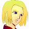

少女 「・・・あたし、いらないの？ ・・・いらない子なの？」
少女 「・・・あたし、いらないの？ ・・・いらない子なの？」
 アベル 「僕は！ ユーニスを見殺しにした罪を一生背負って！ だから！」
アベル 「僕は！ ユーニスを見殺しにした罪を一生背負って！ だから！」
少女 「ここにいちゃ駄目なの？ 居場所が・・・何処にも・・・」
アベル 「・・・ッ！ そんなユーニスの声で！ 僕は！ 僕は絶対に止まらない！ 絶対に！ そんなあなた達を絶対に許さない！」
少女 「お兄ちゃんの・・・、ここに、いても・・・、ねえ」
アベル 「うわああああぁぁぁぁぁっ！」
アベル、少女の乗るザンクαを斬る。
少女のいるコックピットが白い光に包まれる。

ベッドから跳ね起きるアベル。
アベル 「うあっ、あっ・・・、っ！ ユー・・・、は・・・、あ・・・」
ナレーション 「体制勢力、議会・セグメント連合と、反体制勢力、エクレシアの戦いは、膠着状態に入っていた。それは、その陰に潜むユニオンの仕組んだ戦争に他ならない。アベルは、ユニオンに利用されていた真実を知り、ユニオンと戦う決意をする」
「だが、相手の顔も見えない戦場でアベルは、人を撃つ、そのリアルな感覚にさいなまれていた」
タイトル
|
− Shoot down − |
マトリックス。トレーニングルーム前。
 ハインツ 「シャヒーナ」
ハインツ 「シャヒーナ」
振り向くシャヒーナ。
 ケネス 「よ。どうだい？ アベルの調子は」
ケネス 「よ。どうだい？ アベルの調子は」
 シャヒーナ 「熱があったりする訳じゃないけど」
シャヒーナ 「熱があったりする訳じゃないけど」
ケネス 「だろうな。アベルに、Ｒ＆Ｒもお前の仕事だって伝えといてくれ」
シャヒーナ 「Ｒ＆Ｒ？」
ハインツ 「ロッケンロォ〜ル」
通りすがりのアン。
 アン 「馬鹿？」
アン 「馬鹿？」
ハインツ 「ばっ・・・」
ケネス 「休憩と回復。それが出来ないようじゃ、戦士として未熟だってな。強いだけじゃ、いずれ墜とされる」
シャヒーナ 「そうね。アベルは何でも深刻にとらえるから」
ハインツ 「ケネスの場合、悩む事さえなさそうだもンな」
アン 「あんたじゃないんだから」
ケネス 「俺の場合、悩んで解決した試しがねェんだ。そりゃ、諦めもするさ」
アベル 「リスタート。・・・アボッツチェンジ。市街地。シュミレーター・スタート・・・あっ」シュミレーターの電源が突然落とされる。
シャヒーナ 「食事」
アベル 「ご、ごめん」
シャヒーナ 「少しは休みなさい。訓練で消耗してちゃ、何の意味もないわ。敵の波状攻撃はまだ止まないのよ。今は休みなさい」
アベル 「・・・そうだね。ごめん。・・・でも、あの感触が消えないんだ・・・。動いてれば、少しはマシだから・・・」
シャヒーナ 「その声、ユーニスじゃないわ」
アベル 「え？」
シャヒーナ 「実質、オデッセイアを抜ける時、ユーニスを殺したのはあたしだわ」
フラッシュバック。
アベル 「ち、違うよ」
シャヒーナ 「違わないわ。・・・そうやって自分が背負い込めば、気が晴れるの？」
アベル 「そ、そんなんじゃ・・・」
シャヒーナ 「ユーニスを殺した罪は、あたしが背負わなきゃならないものよ。アベルのものじゃない」
アベル 「・・・ありがとう。心配してくれて。でも、・・・そうじゃないんだ。あの気配を僕は知ってて・・・、あの気配は僕を知ってた・・・」
シャヒーナ 「・・・・・・」
オデッセイア。メイン・ブリッヂ。
 キャロライン 「なんで・・・すって・・・！？」
キャロライン 「なんで・・・すって・・・！？」
 ダニエル 「は。こりゃ、ついに終わりましたね」
ダニエル 「は。こりゃ、ついに終わりましたね」
キャロライン 「どうしてなの！？ エドガー・パウエルはクーデターを壊滅させられなかったの！？」
ダニエル 「それが、どうやら嵌められたっぽいンすよ。基地自体は焼け野原です」
キャロライン 「・・・どう言うコト？」
ダニエル 「クーデター派の中核となったフォルビシュは、基地壊滅の後に宣言を行ってる。つまり、この駒は叩かれる事も覚悟の上で、用意してたんですよ」
キャロライン 「・・・イブレイ！ そこまでして・・・！」
ダニエル 「そこまでやる価値のある地位なんですよ。長官のいる場所は・・・」
キャロライン 「そう・・・。そうね」
ダニエル 「それに、Ｇ３体を奪われ、ザンクαは撃墜され、海賊は取り逃がした・・・。これで長官の失脚は確実。身の振り、どうします？ あんまり芳しくない状況ですよ、長官の愛人としては」
キャロライン 「徹底抗戦。それ以外の道はないわ」
ダニエル 「了〜解。こうなりゃ、最後までやらせていただきますよ。・・・でも、何なんです？ ダグラス長官がそこまで目の敵にされる理由って」
キャロライン 「知りたいのかしら？」
ダニエル 「興味はありましたが、何故だか、急になくなりました」
キャロライン 「賢明だわ。ブラントン中尉」
倒壊した基地跡。軍人を主とした群衆を前に。
 フォルビシュ 「我々は！ 絶対権力者の独裁を断じて拒み続ける！ だが！ 必要なのは、志ではない！ 力だ！ 絶対権力者のみしか持つことの許されない力だ！」
フォルビシュ 「我々は！ 絶対権力者の独裁を断じて拒み続ける！ だが！ 必要なのは、志ではない！ 力だ！ 絶対権力者のみしか持つことの許されない力だ！」
つまらなさそうに眺めるミア。
 ミア 「・・・・・・」
ミア 「・・・・・・」
フォルビシュ 「それがないために、此度の戦闘に惨敗したのだ！ 諸君！ 我々が次に取らねばならぬ行動はただ一つ！ エクレシア、そして、パーノッド派との共同戦線である！」
群衆 「おぉぉぉぉ」
フォルビシュ 「最後に！ この惨敗にも挫けず私について来てくれた君たちに、感謝と、幸運、そして勝利を！」
群衆 「おぉぉぉぉ」
引っ込むフォルビシュ。
 ギルバート 「演説、お見事です。フォルビシュ中将・・・。いえ、フォルビシュ閣下」
ギルバート 「演説、お見事です。フォルビシュ中将・・・。いえ、フォルビシュ閣下」
フォルビシュ 「こ、こんな事をやって・・・、即席のあり合わせ軍隊だ・・・。ユニオンに潰されることは必至だぞ」
ギルバート 「ご心配なく。ユニオンの内部抗争から派生した、取るに足らない事件です。調べれば色々と面白い事がわかりましたし、せいぜい、利用させていただきます。閣下も、ユニオンも・・・」
フォルビシュ 「若造１人の力でどうにかなる構造じゃないんだ・・・！ 今ならまだ・・・！」
ギルバート、手持ちの拳銃をフォルビシュの口に突っ込む。
ギルバート 「弾丸を、ケツの穴から出したいんですか？」
フォルビシュ 「うごっ・・・あぐっ」
拳銃を口から抜いて、ホルスターに戻すギルバート。
ギルバート 「閣下、落ち着いてください。閣下にはどっしりと構えていただかないと」
フォルビシュ 「く、クレイジーだ・・・」
ギルバート 「その、イブレイとやらに連絡を取ってください。ダグラスの邪魔にこそ遭いましたが、任務は遂行しました、と」
フォルビシュ 「う・・・ああ」
ギルバート 「そして、必ず付け加えてください。ネルガルはダグラスに協力していた男です・・・、と」

アイキャッチ「Ｇ−ＧＵＩＬＴＹ」
セグメント・フォース。艦を中心として、マシンの部隊が近付いてくる。
ベニー 「へへっ、噂の海賊ってえのと、ついにご対面だぜ」
 ウィリー 「油断するなよ。今のところ、その海賊に手痛い傷を負わせたヤツさえもいないらしい」
ウィリー 「油断するなよ。今のところ、その海賊に手痛い傷を負わせたヤツさえもいないらしい」
ベニー 「心配すんなよ、ウィリー隊長。どんな戦略にも戦術にも勝るのが、物量と装備。それにパイロットの腕前だ」

ナオミ 「あはっ、それじゃ最後のが心配だわ、ベニー」ベニー 「なにィ！？」
ウィリー 「おしゃべりの時間はもう終わりだ。そろそろ連中の艦が見えるぞ」
ナオミ 「了解。後続、ジャイディー、ニコライ隊はボルドーを所定の位置へ展開」
ナオミの指示に、マシンが陣形を組む。
ウィリー 「いいな。今回の我々の任務は、救世主の名を騙る海賊どもの掃討だ。正義は我らの手にある。・・・ゴッドブレス」
ナオミ 「ゴッドブレス」
ベニー 「落ち着いていけよ」
ナオミ 「アンタがね」
マトリックス、デッキ。
ハインツ 「へへっ、奴さんのお出ましだぜ」
ケネス 「機影は中型戦艦一隻に・・・、残りは全部マシンか。確かに、こっちが対艦戦闘に強いとは言え・・・」
ハインツ 「数で押せば勝てると思ってるンなら、オレのヴォーテックスで木っ端微塵だぜ」
ケネス 「運がいいのは、今回の敵はユニオンじゃなく、ユニオンの命令で動いてるセグメントって事だ。強力なマシンのいない事は救いだ。・・・聞いてるのか？ アベル」
アベル 「あ、はい。大丈夫です。聞いてます」
ケネス 「しっかりしろよ。足を地に付けてな。・・・宇宙だけど」
アベル 「は、はい」
ケネス 「よし、サイファー！ 出るぞ！」
ハインツ 「ヴォーテックス！ 出るぜ！」
アベル 「あ、・・・ソードケイン、出ます！」
宇宙。
ベニー 「来なさった来なさった」
ウィリー 「オートマターのバーガンディーを先行！ ボルドー隊は戦闘準備！ チャフを散布！ 陣形は崩すなよ」
ナオミ 「左翼！ ジャイディー隊！ 右翼！ ニコライ隊！」
迎え撃つアベルたち。
ケネス 「はン。ネズミ捕りにしちゃ、随分と大所帯だね」
ハインツ 「前方１２時、バーガンディー６機！ 後方にスザク６機！ １１時と２時にボルドー６ずつ１２機！」
アベル 「ハインツさん！ 前方抑えててください！ 後方のスザクと戦艦を叩きます！」
ソードケイン、一機で先行する。
ハインツ 「まかせとけって・・・て、ええっ！？」
ケネス 「馬鹿少年！ 勝手に動くな！ ッ・・・ちィ！」
アベル 「戦艦さえ叩けば！ マシンはしりぞいてくれるからッ！」
ハインツ 「どォーすンだよッ！ ケネス！ アベルの馬鹿が・・・」
ケネス 「ちッ！ ハインツは迎撃態勢！ 固まった敵を一掃しろ！ やれるな！？」
ハインツ 「あったぼうよ！」
ケネス 「俺はアベルの援護に回る！ マトリックスに敵を寄せるなよ！？」
ケネス、サイファーを前へ。
ハインツ 「わかってらァ！」
集中砲火を全て回避、シールドで受けるアベル。
アベル 「出てこないでよ！ 討たなきゃならなくなるじゃないかッ！」
アベル 「また！ 出てくるから！」
陣形の最後尾で構える３機のスザク。
ウィリー 「は・・・、何だありゃ？ 鬼神の如きってヤツか？」
ナオミ 「そりゃ、救世主扱いもされるわね・・・」
ベニー 「じゃア、オレ達ぁ、それを倒す悪魔？」
ウィリー 「いいじゃないの。・・・ヤツは真っ直ぐ艦を叩きに来る。タイミングはわかってるな？」
ナオミ 「承知」
ベニー 「落ち着いて行けよ」
ナオミ 「アンタがね」
アベル 「こうも弾幕が厚いと・・・！」それでも進むアベル。
ケネス 「かァッ！ 先行しすぎるんじゃねえぞアベル！」追いつけないケネス。
アベル 「このスザクを越えれば・・・！」ナオミ 「来た・・・！」
ウィリー 「焦るなよ。まだだ！」
ウィリーの制止にも関わらず、慌てて前へ出るナオミ。
アベル 「前に・・・！ 出ないでよ！」
アベルのライフルが、ナオミを撃墜する。
ナオミ 「・・・あ・・・あ・・・」
撃墜した機影にザンクαの幻影を見るアベル。
アベル 「ッ！？」
ベニー 「ナオミッ！」
ウィリー 「うろたえるなァッ！ 撃てェ！」
ベニー 「コイツっ！ ナオミをォォォォッ！」
アベル、ベニー機スザクのガトリング攻撃を回避。ウィリー機スザクの前へ。
アベル 「惑わされませんよッ！」
ちらつくユーニスの幻影を振り切って前進するアベル。
ベニー 「チョロチョロすんなやァッ！」
アベル 「そんな弾ぐらいならッ！」
ウィリー 「掛かったァッ！！」
ウィリーのガトリングガンをシールドで受けるアベル。
弾丸が、シールドに接触した瞬間、弾丸は小さく摩耗しながらも、シールドを貫通する。
アベル 「なんッ！？」アベルが機体をひねるが、無数のガトリング弾がソードケインに孔を空ける。
ケネス 「なにッ！？」
ベニー 「沈めえェェェッ！！」
ベニーとウィリーの弾丸が、ソードケインを蜂の巣に。
ケネス 「アベル！！ ・・・この弾丸！ まさか・・・！？」
ハインツ 「・・・アベルが？ 撃墜された？」
ウィリー 「思い知れッ・・・！ ＡＢＣＢの力を・・・！」
ケネス 「アンチ・ビーム・コーティング・バレットか！」
ウィリー 「この機体・・・！」
ウィリーが、動かなくなったソードケインを回収しようとするが、追いついたケネスのサイファーがそれを阻止する。
ケネス 「させるか馬鹿ッ！」
ウィリー 「ベニー、前へ出過ぎるな！ ベニー！」ベニー 「てめえもッ！」
ケネス 「ネタバレした手品じゃ、客は呼べねぇんだよッ」
ケネス、ひたすら回避でベニー機を撃墜。
ベニー 「うあッ・・・、あ・・・！ な、ナオミ・・・！ オレ・・・」
ウィリー 「ジャイディー隊！ ニコライ隊！ オートマターで牽制しつつ後退しろッ！ これ以上は無理だ！ 一機沈められただけでも大金星だ！」
ウィリー、撤退命令を下す。
ハインツ 「逃がすかァ！」
ケネス 「ハインツ！ 敵よりソードケインを回収だ！ 残存兵力は俺が押さえるッ」
ハインツ 「あ、ああっ」
ケネスは追撃。ハインツがボロボロになったソードケインを回収する。
マトリックス、デッキ。駆けつけるシャヒーナ。
シャヒーナ 「アベルが墜とされたの！？」
ハインツ 「慌てンなよ、命に別状はない」
シャヒーナ 「・・・っ」
ケネス 「敵が厄介な武器を持ちだしてきた。まだ開発中だとは思ってたが・・・、ビームシールドを貫通する弾丸だ」
シャヒーナ 「それで・・・っ、アベルは・・・」
ケネス 「ソードケインはガトリングで蜂の巣。んだけど、コックピットはほぼ無傷。まったくアベルの超人振りには毎度の事ながら驚かされるね」
シャヒーナ 「無事・・・なのね」
ケネス 「ああ、ちょっとパニックを起こして、出てこないけどな。・・・おい、シャヒーナ」
シャヒーナ、ボロボロのソードケインへ。
ソードケイン、コックピット。
アベル 「・・・あ」
シャヒーナ 「出なさい」
アベル 「・・・・・・」
シャヒーナ 「甘ったれてないで、出るの」
アベル 「・・・でもっ」
シャヒーナ 「・・・いつまでそうしてるつもり？」
アベル 「僕は・・・ッ」
シャヒーナ 「アベル・・・。あんたは・・・、人殺しなのよ」
アベル 「ッ！」
シャヒーナ 「今日も必ず、誰かの子供や、誰かの親兄妹を殺してるわ」
アベル 「くっ」
シャヒーナ 「あんたは、人を殺してでも、他人の幸せを奪ってでも、人が死ななくて良い世界を作るんでしょう？ そんな事も知らずに、その覚悟もナシに戦ってるの？」
アベル 「そうじゃ・・・」
シャヒーナ 「だったら、妹が死んだとか人を殺したとか、そんなつまらない事でつまずかないで」
アベル 「・・・だってッ」
シャヒーナ 「あんたが死んだら、あんたが殺した人は、それこそ何のために死んだのよ？」
アベル 「死ん・・・、僕は・・・、シャヒーナ・・・、」
シャヒーナ 「大儀があれば、人を殺して良い訳じゃない。・・・だけど、アベル。あんたはもう、死ぬことも、逃げ出すことも許されないの。・・・罪を背負うなら、勝手に死ねないのよ」
アベル 「・・・シャヒーナ。・・・僕は、」
シャヒーナ 「泣いてもいいわ。落ち込んでも、悲しんでも、苦しんでも。生きて帰ってくれば、あたしが慰めてあげる。・・・だから、立ちなさい」
アベル 「・・・怖かったんだ、死ぬのが。・・・ものすごい殺意を向けられて、それでも、僕は生きてて・・・」
シャヒーナ 「生きてくことは、罪じゃないわ。・・・さ」
アベル 「・・・うん」
アベル、力なく立ち上がる。
デッキから、降りてくるアベルとシャヒーナを、ケネスたちが見守っている。
ハインツ 「へへ、尻に敷かれてるよな」
ケネス 「人の事ァ、言えねえだろ」
ケネスの見る先にアン。
降りてきたアベルが、ケネスに頭を下げる。
ケネス 「派ッ手にやられたな」
アベル 「・・・すみま・・・せんでした。ソードケイン、壊しちゃって・・・」
ケネス 「ボッシュやジーンは怒るだろうけど、気にすンな。マシンは直せる。お前のクローンがいたって、そんなのはお前じゃないんだ」
ケネスがアベルの頭をかいぐる。
アベル 「・・・すみま・・・せんでしたッ」
ケネス 「俺ァ器用じゃないんでな。泣くンならシャヒーナに抱きついてからにしろ」
アベル 「ぇ、ぃゃ、そんなんじゃッ」
ケネス 「冷やかされてオタつくぐらいなら大丈夫だな。次の戦闘まで、しっかりシャヒーナに甘えとけよ」
アベル 「・・・ぁ、ぃぇ、・・・そのっ・・・」
ケネス、手を振ってきびすを返す。

ナレーション 「失敗に次ぐ失敗で、ついに退陣を迫られるＡＪ。イブレイは万全の準備でＡＪの方策を封じる。残された道は抵抗か、それとも、キャロラインとの隠遁生活か。そしてその時ＡＪが取った行動とは・・・。次回、『ダグラスの失脚』 Ｇの鼓動が、今目覚める」